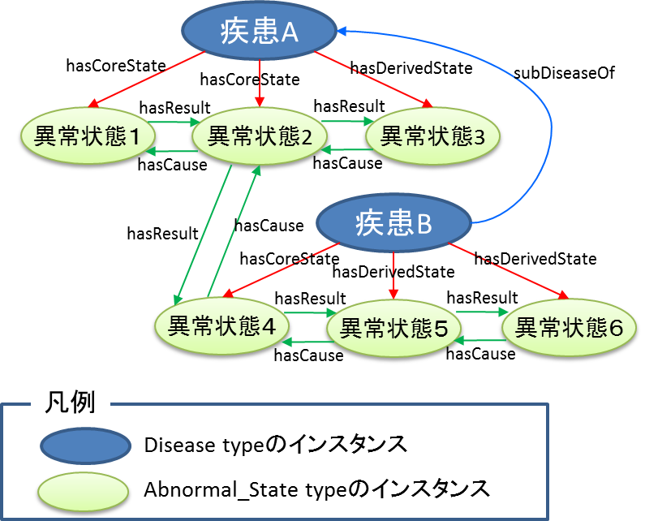
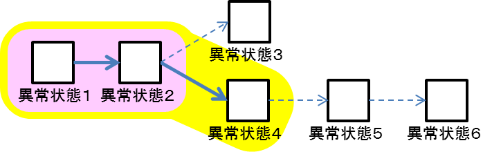

疾患オントロジーLinked Data（RDF）版のSPARQLエンドポイント
本ページでは「医療情報システムのための医療知識基盤データベース研究開発事業」
で開発された，臨床医学オントロジー CONAND(Clinical Ontology in Anatomaical Structure and Disease)
の疾患オントロジーのLinked Data（RDF）の情報を公開しています．
疾患オントロジーのLinked Data（RDFデータ）へのアクセス方法
臨床医学オントロジー CONANDの疾患オントロジーのLinked Data（RDFデータ）は，以下のSPARQLエンドポイントから取得できます．
SPARQLエンドポイント
http://lod.hozo.jp/endpoint/disease_multi
データモデル
「疾患オントロジー」から「異常状態の因果連鎖」に関する情報のみを抽出してRDF化しています．
本来は，オントロジーですので「クラス（概念）レベル」の情報を表していますが，LODとして利用する際の利便性を考え，全てインスタンス（RDFリソース）の形に変換してあります．
データモデルの概要は，以下の通りです．
- 各疾患はDisease typeのインスタンス，異常状態はAbnormal_State typeのインスタンスとして表現されます．
- 各疾患の因果連鎖を構成する異常状態は，
- - hasCoreState：疾患定義となる因果連鎖に含まれる異常状態
- - hasDerivedState：疾患定義には含まれないが，その疾患に罹患した患者に典型的に見られる異常状態
という2種類のプロパティで表されています．
- 異常状態間の因果関係は，hasCauseおよびhasResultプロパティで表現されています．
- 疾患のis-a関係はsubDiseaseOfプロパティで表されます．（rdfs:subClassOfを用いていない理由は，各疾患や異常状態をインスタンスとすることで，
因果関係の検索・探索を簡単に行えるようにするためです．
オントロジー版ではクラスレベルでのより厳密な定義を提供します）
疾患連鎖の記述例

上記の例では，「疾患」Aとその下位疾患である「疾患B」に含まれる因果連鎖を示しています．
「疾患B」の因果連鎖を取得する場合には，上位疾患である「疾患A」に含まれる因果連鎖を合わせて取得する必要があります．
よって，「疾患B」の因果連鎖を「疾患オントロジーナビゲータ :Disease Compass」の形式で可視化すると下記のようになります．

本データセットの詳細や，SPARQLでの検索例などについては，
こちらの文献をご覧ください．